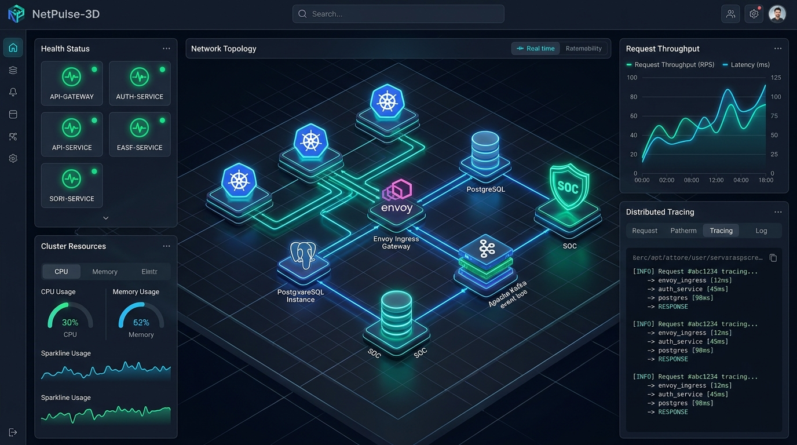

About Me

MarcosAosf
</Aosf.dev>
Currently working as a Network Support Analyst (N2) & Automation Engineer.
Atuação & Foco
- Redes, Automação de Switches/Roteadores, Hardening
- Automação com Python (Netmiko, Scapy) e Bash
- Estudos em Segurança de Redes, Cisco e Forense
Tech Stack
Formação & Certificações
Formação Acadêmica & Pós-Graduação
Pós-Graduação em Engenharia de Redes e Segurança de Dados
Especialização focada em conectividade corporativa, topologias de alta disponibilidade, governança e proteção de dados em trânsito.
Pós-GraduaçãoPós-Graduação em Cibersegurança & Segurança da Informação
Especialização voltada à defesa em profundidade, mitigação de ameaças, resposta a incidentes, compliance e gestão de vulnerabilidades.
Pós-GraduaçãoAnálise e Desenvolvimento de Sistemas (ADS)
Graduação em engenharia de software, desenvolvimento de algoritmos escaláveis, bancos de dados relacionais e modelagem de sistemas.
GraduaçãoCurso Técnico Integrado em Tecnologia da Informação
Formação técnica integral em arquitetura de computadores, redes locais (LAN), infraestrutura operacional e lógica de programação.
Curso TécnicoLicenças & Certificações Oficiais
Cisco Cyber Threat Management
Identificação, contenção e mitigação de ameaças de rede, inteligência defensiva e arquitetura de segurança Cisco.
Credencial Oficial Credly BadgeOperação Curupira 3.0 (Guardião Cibernético 8.0)
Simulação prática de guerra cibernética e defesa de infraestruturas críticas civis: Pentest e Hacking Ético de alto nível.
Defesa Cibernética & PentestFIAP Cybersecurity
Fundamentos aplicados de segurança ofensiva e defensiva, controle de perímetros, governança de TI e gestão de acessos.
EspecializaçãoFibra Óptica Avançada & OTDR Anritsu MT9085A
Fusão de fibra com máquina Inno View 6S, microscópio, instrumental óptico, medição de atenuação OTDR e montagem de caixas DGO.
Infraestrutura ÓpticaComputação Científica com Python
Análise de dados de alta precisão e algoritmos de computação com NumPy, Matplotlib, SciPy e Pandas para modelagem analítica.
Python CientíficoBootcamp Santander Cibersegurança & Pentest
Varredura de redes com Nmap, técnicas de exploração e pós-exploração de vulnerabilidades e segurança ofensiva com Kali Linux.
Bootcamp PráticoAgile Scrum Foundation EXIN
Metodologias ágeis de gestão de projetos de tecnologia, governança Scrum, ritos ágeis e produtividade em equipes multidisciplinares.
Metodologia ÁgilCC50: Introdução à Ciência da Computação
Fundamentos conceituais de algoritmos, alocação de memória, estruturas de dados (arrays, árvores, tabelas hash) e eficiência computacional.
Ciência da ComputaçãoProjects & Labs

NetOps-AutoPilot
Framework de automação de infraestrutura de redes para roteadores e switches Cisco IOS, Mikrotik e Juniper com backup automatizado, diff SHA256 e provisionamento via Jinja2.

Cisco Network Simulator
Dashboard interativo para treinamento em redes Cisco com simulador de linha de comando IOS, topologias visuais de roteadores e switches e validação de comandos em tempo real.

NetPulse-3D
Cockpit 3D em tempo real para observabilidade de redes cloud, topologia de roteamento e telemetria SOC com Three.js WebGL, gráficos Canvas 60 FPS e OpenTelemetry.

ZTerm VulnScanner
Automated wrapper script that receives an IP/Range, executes a silent Nmap scan, and cross-references services with CVE databases to generate Markdown reports.
Hardening & Governance Toolkit
Ferramenta de hardening em Bash atuando na camada de infraestrutura. Realiza blindagem de servidores Linux, análise automatizada de logs para detecção de anomalias (Brute Force/Sudo) e gestão inteligente de regras de Firewall (UFW/IPTables).

cdpr
Automation tool developed in Bash/PowerShell focused on network infrastructure and security. The script automates the passive capture and analysis of Layer 2 (Data Link) packets using the cdpr utility and network filter injection to silently and efficiently map the topology of switches connected to the workstation.
GitHub Stats
Achievements
Aosf | Noob
HackTheBox Enrolled
Random Dev Quote
"AI is a fundamental risk to the existence of human civilization."
- Elon Musk